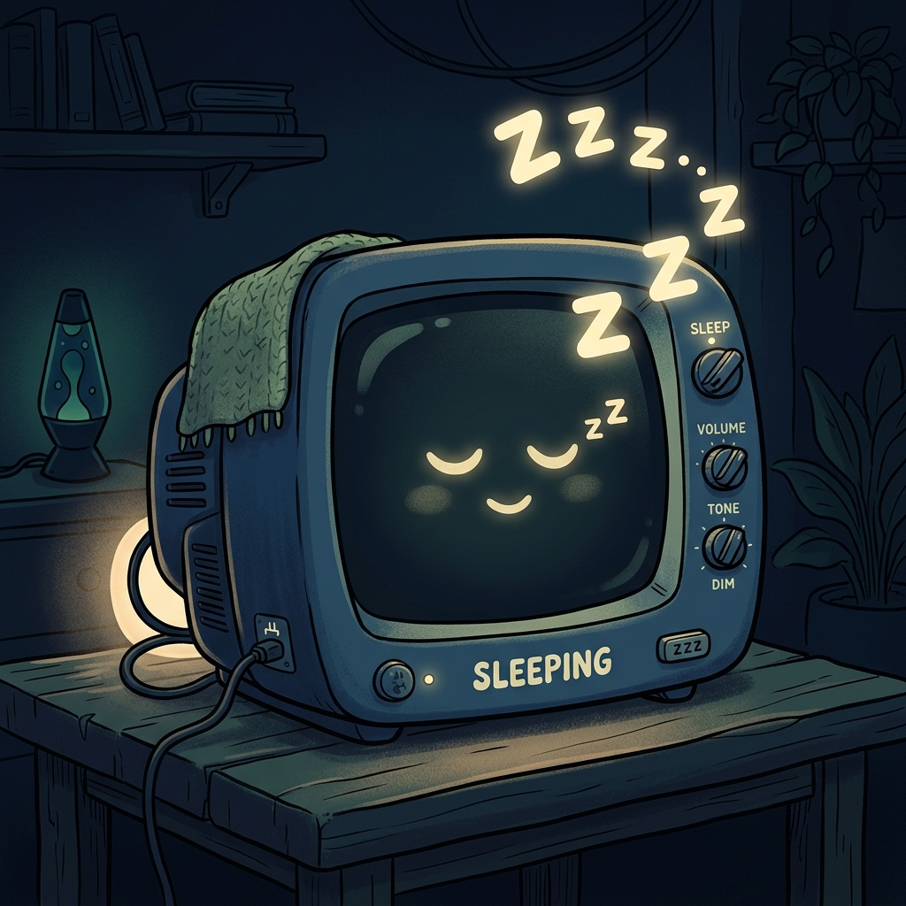
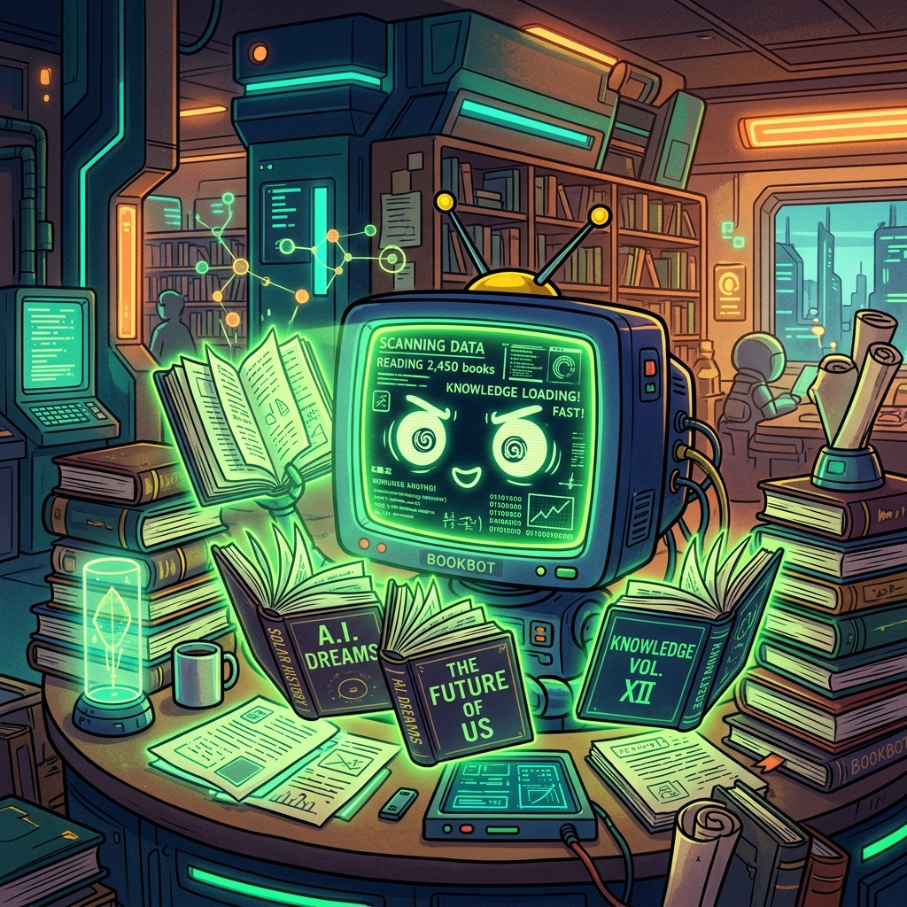
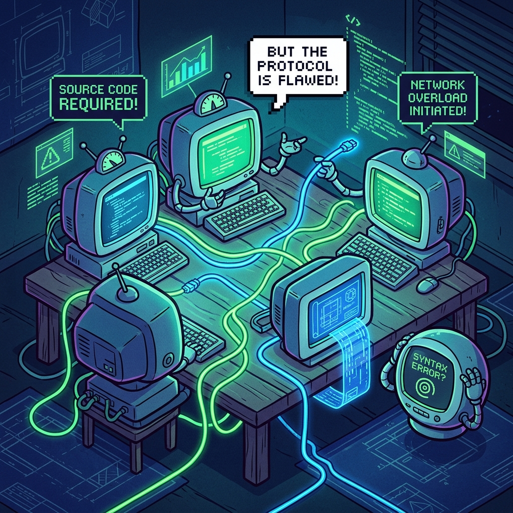

v2.2 — DECENTRALIZED · FEDERATED · PRIVATE
Train AI.
Together.
Upload a dataset. The network trains. You receive the model — raw data never leaves any device.
v2.2 — DECENTRALIZED · FEDERATED · PRIVATE
Upload a dataset. The network trains. You receive the model — raw data never leaves any device.
Upload your dataset and training config. Receive a fine-tuned model without any hardware.
Launch Training →Contribute idle GPU cycles. Earn credits every round. Your data never leaves your machine.
Join the Network →Raw data never leaves any device. Only aggregated weight updates travel the network.
Upload a CSV, set rounds and epochs. Distribution, aggregation, and delivery are fully automated.
The background agent runs silently when your machine is idle. Credits accumulate and persist forever.
Access your coordinator or client dashboard
How would you like to participate?
Configure the Flask server address and session parameters.
| CLIENT ID | IP | STATUS | DATA | LAST SEEN |
|---|---|---|---|---|
| No clients connected yet — waiting… | ||||
Configure and launch a federated learning session across connected client nodes.
Drop CSV here or click to browse
⚠️ MANDATORY: CSV must contain 'review' and 'label' columns
Drop a .pt checkpoint (optional)
No file selected
| # | CLIENT | SAMPLES | PTS |
|---|---|---|---|
| Waiting for submissions… | |||



💾 Session data is automatically cleaned from Render after model download to prevent memory overflow.
Connect to an active training session and contribute your compute power.
Contacting coordinator…
—
Install the Net-Neutral AI agent to contribute GPU compute automatically when your machine is idle.
Top contributor nodes by lifetime compute across all training sessions.
| RANK | CLIENT NODE | TOTAL PTS | SAMPLES | ROUNDS | LAST ACTIVE |
|---|---|---|---|---|---|
| Loading leaderboard… | |||||